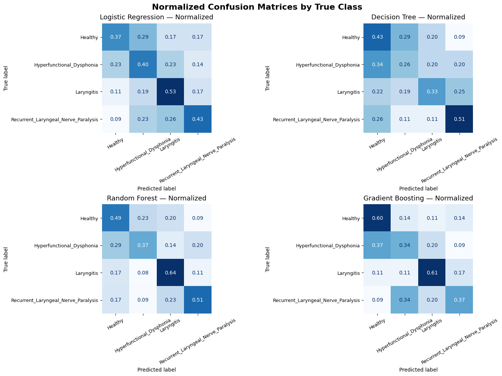

Signal processing and features
Converted EGG and NSP recordings to WAV and extracted RMS energy, zero-crossing rate, MFCCs, pitch variation, spectral descriptors, chroma and spectral contrast.
Comparing electroglottographic and neck-surface recordings to explore whether acoustic feature engineering and machine learning can distinguish healthy voices from pathological phonation.
EGG captures changes in vocal-fold contact; NSP reflects neck-surface vibration. This project used both sources to investigate complementary physiological and acoustic features in a four-class classification problem.
Converted EGG and NSP recordings to WAV and extracted RMS energy, zero-crossing rate, MFCCs, pitch variation, spectral descriptors, chroma and spectral contrast.
Benchmarked Logistic Regression, Decision Tree, Random Forest and Gradient Boosting with patient-wise splits, SelectKBest and GroupKFold experiments.
Merged patient-aligned EGG and NSP features and trained models on the combined representation to evaluate whether the modalities improve each other.
Explored a locally run NSP-based voice classification workflow using three five-second vowel recordings. It is a research proof of concept, not a medical diagnostic product.
| Experiment and top classifier | Test accuracy |
|---|---|
| EGG / Gradient Boosting | 43.30% |
| EGG + feature selection / Random Forest | 44.22% |
| NSP / Logistic Regression | 43.97% |
| EGG + NSP fusion / Random Forest | 50.35% |

The highest accuracy was obtained with feature-level fusion. Hyperfunctional dysphonia remained challenging to distinguish, indicating a substantial limit to performance despite complementary modalities.
The GitHub repository contains the complete research notebook, saved evaluation figures and the academic report. The original voice dataset and trained local model are excluded to protect privacy and respect data permissions.